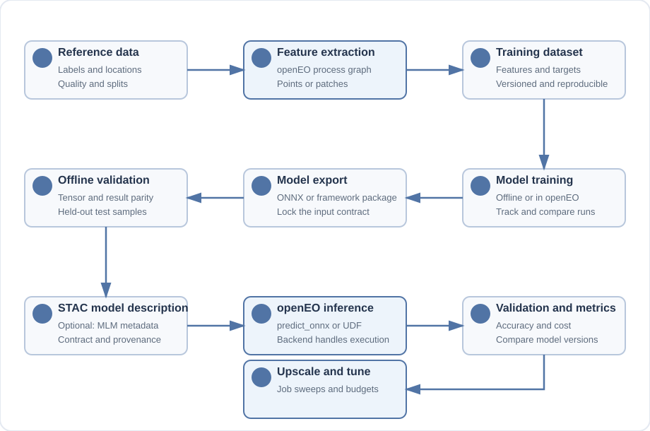
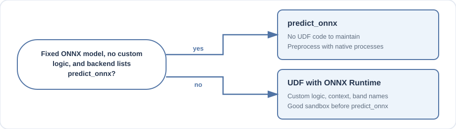
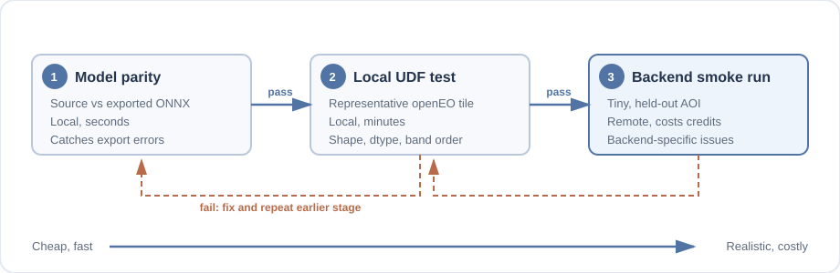

Geospatial AI Playbook#
A hands-on guide to incorporating machine-learning projects with openEO end-to-end, from reference data and feature extraction to training, model packaging, inference, validation, and upscaling.
It complements Machine Learning, User-Defined Functions, User-Defined Processes, and Batch Jobs.
Quickstart: what is where
If you want to…
Go to
Understand where openEO fits in an ML workflow
Extract features with an openEO graph
Organise reference data, sample, split, host it at a URL
Extract points or patches, deliver to storage
2.5 Point extraction with
aggregate_spatial, 2.6 Patch extraction withfilter_spatialDecide where to train, or train lightweight models in openEO
Choose between UDF and
predict_onnxExport a model to ONNX
Deploy a model
Describe a model with STAC
Run inference reliably inside a UDF
Validate a model and benchmark it
Scale up and control cost
Scope labels. Statements are valid on all openEO backends unless marked CDSE-specific, Terrascope-specific, or
backend-specific. “Verified 2026-11-23” means checked against the live capabilities of openeo.dataspace.copernicus.eu
(CDSE) and openeo.vito.be (Terrascope).
Check the backend before generating code. Process and runtime support differs per backend:
import openeo
connection = openeo.connect("openeofed.dataspace.copernicus.eu").authenticate_oidc()
needed = {"load_url", "aggregate_spatial", "filter_spatial", "predict_onnx", "export_workspace", "run_udf"}
print("missing processes:", sorted(needed - {p["id"] for p in connection.list_processes()}))
print("UDF runtimes:", list(connection.list_udf_runtimes()))
print("output formats:", list(connection.list_output_formats()))
Verified 2026-11-23: all processes above are listed on both CDSE and Terrascope.
Job options policy. job_options keys and values are backend-specific. Read the target backend’s documentation or
ask the user; never copy values from the examples here unchanged.
Where openEO helps most in a Machine Learning (ML) workflow#
openEO is strongest at consistent, reproducible EO data access and processing at scale. In practice, a robust setup uses openEO for feature extraction and operational inference, while heavy training often stays in external GPU environments. Once trained, the model is brought back into openEO as a reusable inference block.
This split is usually a strength: extraction and inference stay reproducible, while model development stays flexible. By keeping openEO constraints in mind from the start, many later operational hurdles can be avoided.
This playbook shares the working patterns we have learned from real projects. Its scope covers:
organising reference data with STAC,
extracting EO features,
training models, converting them to ONNX,
describing models with STAC,
running inference and validation pipelines in openEO, and
upscaling with performance tuning.
Each of those stages maps to a section below.
End-to-end story#

1. Data extraction and feature engineering in openEO#
Many operational problems start with a mismatch between training and production data, not with the model itself. Keep the target backend in view from the start so the features used in training can be reproduced during inference.
1.1 Start with backend discovery#
Before designing the model, check which collections and dates are available on the production backend, and whether its processing level matches your plan. For example, Sentinel-2 L2A can differ between backends in processing baseline, cloud mask, or atmospheric correction; small differences can accumulate over a large inference run.
If a source is missing, load_stac can bring external STAC assets into the graph
(load_stac()).
1.2 Make the data contract explicit#
Build extraction as an openEO graph and record its input contract: collections and bands, units and scaling, CRS and resolution, compositing, cloud/no-data handling, and feature engineering. These choices define what the model sees, so keeping them explicit makes training and inference reproducible. The graph can also become an integration check, for example through ESA APEx.
1.3 Freeze and version the extraction graph#
Treat the extraction graph as part of the model definition and version it with the weights. A parameterised user-defined process provides a reusable interface; record its version with each job and publish changed outputs as new releases rather than overwriting old ones. Where available, keep batch-result STAC provenance with the training data.
1.4 Example: a simple feature extraction graph#
import openeo
connection = openeo.connect("openeofed.dataspace.copernicus.eu").authenticate_oidc()
spatial_extent = {"west": 5.08, "south": 51.20, "east": 5.22, "north": 51.31}
temporal_extent = ["2024-04-01", "2024-09-30"]
cube = connection.load_collection(
"SENTINEL2_L2A",
spatial_extent=spatial_extent,
temporal_extent=temporal_extent,
bands=["B02", "B03", "B04", "B08"],
max_cloud_cover=80,
)
# Simple cloud mask: SCL classes 3 (cloud shadow), 8-9 (cloud) and 10 (cirrus).
scl = connection.load_collection(
"SENTINEL2_L2A",
spatial_extent=spatial_extent,
temporal_extent=temporal_extent,
bands=["SCL"],
max_cloud_cover=80,
).band("SCL")
cloud_mask = (scl == 3) | (scl == 8) | (scl == 9) | (scl == 10)
features = cube.mask(cloud_mask).aggregate_temporal_period(period="dekad", reducer="median")
job = features.execute_batch(
out_format="NetCDF",
title="features_s2_dekad_v1",
)
2. Organising and extracting reference data for ML#
Training a machine-learning model on Earth observation data starts with high-quality reference data: a set of locations for which the target variable (for example, a crop type, land-cover class, or biophysical measurement) is known. This section describes how to organise such reference data and how to extract the corresponding satellite observations with openEO, either as points (tabular time series per sample) or as patches (small raster chips per sample). For a worked end-to-end example, see the extracting-training-data notebook (Sentinel-2 L2A with LUCAS 2022 reference samples).
2.1 Extraction modes#
Choose the extraction mode to match the model input: point time series produce feature tables, while patch extraction produces raster chips for models that need spatial context. The modes have different output formats and job-sizing needs.
Point extraction Process:
aggregate_spatialTypical model: models operating on per-pixel time-series inputs, such as random forests, gradient boosting, or time-series deep-learning models (for example, LSTM, transformers) Output: a vector cube, exported as tabular data (Parquet/CSV) with one row per sample and observation datePatch extraction Process:
filter_spatialTypical model: models requiring spatial context, such as convolutional neural networks or vision transformers Output: a sparse raster cube, exported as one netCDF or GeoTIFF file per sample polygon
For process details and parameters, see
aggregate_spatial()
and
filter_spatial().
The output format follows from the extraction mode and from how you consume the result:
Format |
Type |
Typical use |
|---|---|---|
GeoTIFF (cloud-optimized) |
raster |
Patches that should open in any GIS or web viewer. |
netCDF |
raster |
A full time series per patch in a single file; common for deep-learning training. |
Zarr (experimental) |
raster |
Large arrays for cloud-native analysis. |
(Geo)Parquet |
vector |
Point extractions with many samples; retains feature attributes. |
GeoJSON |
vector |
Small extractions that you want to inspect by hand. |
CSV / JSON |
vector |
Quick inspection in spreadsheets; may not retain feature attributes. |
Supported formats and their options are backend-specific; check them with
list_file_formats().
2.2 Organising your reference data#
Format and structure#
Reference data is best managed as a vector dataset, with one feature per sample. The structure you choose here determines how smoothly the rest of the pipeline runs, because every downstream step (extraction, training, validation) inherits the decisions you make at this stage.
Geometry: points for point extraction, or patch polygons for raster extraction. Keep patches small (for example, 64×64–512×512 pixels); large polygons can dominate memory and job cost, so handle larger areas separately. Derive patches from a fixed, pixel-aligned (e.g. UTM based) grid so sensors and runs align.
Target attribute(s): the label or value that your model will learn to predict. If you have multiple target variables, keep them as separate columns rather than encoding them into a single field; this makes it easier to train different models from the same reference dataset without re-extracting.
Sample identifier: a stable, unique ID to trace extractions to reference labels, including after corrections.
Temporal information (recommended): a validity date or period per sample, so you can define the correct temporal extent when extracting satellite data. Without this, you either extract a fixed window for all samples (which may be wrong for samples collected in different seasons) or you manually split the reference data into temporal groups, which is error-prone at scale.
The recommended file formats are GeoParquet and GeoJSON. GeoParquet is preferred for larger datasets, as it is compressed, columnar, and faster to read. GeoJSON is fine for small datasets and for cases where you need to inspect the file by hand, but it becomes unwieldy beyond a few thousand features.
Tip
The WorldCereal Reference Data Module (RDM) is a good example of how reference data can be curated and harmonised at scale: samples are stored with a unique ID, a harmonised label, a validity time, and quality attributes, and are exported as GeoParquet for extraction.
Label quality#
Reference labels can be wrong, so treat their quality as explicit metadata rather than an assumption. A simple controlled vocabulary at dataset level works well, for example:
unverified: delivered as-is by the provider;automated: passed automated checks (geometry validity, schema, duplicates, class consistency);reviewed: a sample was checked by an interpreter, with the reported sample size and estimated label accuracy;validated: every feature was independently verified.
Where available, add per-feature columns such as qa_status, qa_method, qa_date, and qa_confidence. Because
attributes travel with the extracted values (see Attribute propagation), you can then filter or
weight samples by label quality at training time without re-extracting.
Cataloguing with STAC#
Once reference data spans multiple files or contributors, STAC makes releases searchable and reproducible. Use one
collection per dataset and one item per immutable release, with GeoParquet/GeoJSON as assets that can be passed to
load_url. Record when observations are valid (not when files were uploaded), and document the label schema with the Label
extension. Where supported, export_workspace can publish extracted data and metadata directly to a STAC API (see
Delivering patches to storage).
Sampling strategy#
Which samples you extract determines both the cost and the quality of the model. A random or regular selection over all available reference data is usually dominated by common classes and spatially clustered locations. A strategy that works well in practice:
Start from the approved reference data. Exclude or down-weight samples with insufficient label quality (see Label quality).
Stratify by class and, where spatial variability matters, also by zone (for example ecoregion, climate zone, or country). Rare classes can be merged into a parent class when too few samples exist.
Allocate a target number of samples per stratum. Common rules are equal allocation (balanced classification), a minimum per class with the remainder proportional to class frequency, a compromise proportional to class frequency raised to a power between 0 and 1, or explicit quotas. Strata with fewer candidates than their target are taken in full and reported as under-represented.
Spread samples spatially within each stratum, for example with spatially balanced sampling (GRTS), a minimum separation distance, or quotas per coarse grid cell, to avoid clusters.
Account for patches with multiple classes. A patch selected for one class also contains others: count classes from the actual patch content, and fill rare classes first.
Report before extracting. Check per-class and per-zone counts, class balance, and spatial coverage before spending compute on extraction.
Make the selection reproducible: use a fixed random seed, a versioned strategy, and a stable ordering (for example a hash of seed and sample ID), so that new reference data can be added later without reshuffling the existing selection.
Spatially independent data splits#
Neighbouring samples are strongly correlated. If samples from the same field or the same few kilometres end up in both the training and the test set, accuracy estimates will be too optimistic. Assign each sample to a spatial block, taken from a coarse grid that is larger than the expected autocorrelation range (often tens of kilometres), and put whole blocks into the train, validation, or test split, stratified so that every split contains all classes where possible. Store the split as an attribute of the reference data rather than deriving it at training time, and keep a block in the same split when new data is added.
Hosting the data at a URL#
Sending many geometries inline as GeoJSON quickly makes openEO requests too large. Instead, upload your reference data to a
URL the backend can reach, for example object storage (S3), Artifactory, or a GitHub repository, and load it into openEO
with the load_url process
(Connection.load_url()):
import openeo
connection = openeo.connect("openeofed.dataspace.copernicus.eu").authenticate_oidc()
reference_data = connection.load_url(
"https://example.com/my_reference_data.parquet",
format="Parquet",
)
For GeoJSON files, use format="GeoJSON" instead.
Not all reference data can be public: labels are often licensed or restricted. In that case, keep the files private and
pass a short-lived signed (presigned) URL to load_url. Store the stable, unsigned location in your catalogue, never the
signed URL itself, and generate a fresh signed URL when you submit an extraction job: a job resubmitted with an expired URL
will fail.
If you do not have your own hosting, the openEO Python client provides an artifact helper that
temporarily stores files on S3 storage offered by the backend and returns a presigned URL that can be passed straight to
load_url:
from openeo.extra.artifacts import build_artifact_helper
artifact_helper = build_artifact_helper(connection)
storage_uri = artifact_helper.upload_file("my_reference_data.parquet")
reference_data_url = artifact_helper.get_presigned_url(storage_uri)
reference_data = connection.load_url(reference_data_url, format="Parquet")
CDSE-specific. The artifact helper is backend-specific functionality and the uploaded files are only kept
temporarily, so it is well suited for one-off extractions, but not as a long-term home for your reference dataset.
By default, the presigned URL returned by get_presigned_url is valid for 7 days. If you rely on it for a
multi-week training campaign, you may find that your reference data has expired between runs.
Splitting into spatial groups#
For continental or global datasets, split samples into spatial groups and run one batch job per group. A job that crosses UTM zones may reproject part of the data and lose alignment with native pixels; very large requests also increase memory pressure and make failures more expensive to restart. Sentinel-2 MGRS tiles (about 110×110 km) are a useful grouping unit because they align with the data and usually stay within one UTM zone.
The openEO Python client offers a job splitting utility
(the split_area() function, see job splitting custom grid) that partitions your area or
samples over a tile grid, such as a pre-computed Sentinel-2 tile grid, and returns a GeoDataFrame with one row per tile — a
ready-made starting point for a job database. The openEO MultiBackendJobManager (see job manager) can
then run and track the resulting list of extraction jobs. For patch extractions, note that size-based splitting does not
guarantee pixel alignment: pass a pre-computed grid, and derive the patch polygons from that same pixel-aligned grid.
In split_area, these two modes are mutually exclusive: either pass projection + tile_size for size-based tiling,
or pass tile_grid for a pre-defined grid. In size-based mode, tiles are anchored at the AOI south-west corner and edge
tiles are clipped to the AOI boundary; this is convenient for load balancing but not automatically pixel-aligned.
Important
Not only the spatial extent of a group, but also its spatial density (how many reference observations fall within that extent) determines how large a job can be. A tile with thousands of samples may need to be split further, while sparsely sampled tiles could be merged into a single job. Finding the right job size may require some trial-and-error fine-tuning. A good starting point is to aim for a few hundred to a few thousand samples per job, then adjust based on observed runtime and memory usage.
2.3 Loading satellite data#
Load the satellite collections that provide the input features of your model, restricting the spatial and temporal extent to what is needed for your samples. A typical multi-sensor example with Sentinel-2 optical data and Sentinel-1 GRD (SAR) data:
temporal_extent = ["2024-01-01", "2024-12-31"]
s2 = connection.load_collection(
"SENTINEL2_L2A",
temporal_extent=temporal_extent,
bands=["B02", "B03", "B04", "B08", "B11", "B12"],
max_cloud_cover=80,
)
s1 = connection.load_collection(
"SENTINEL1_GRD",
temporal_extent=temporal_extent,
bands=["VV", "VH"],
)
At this point, there is no need to specify a spatial_extent: the extraction processes referenced above
(aggregate_spatial or filter_spatial) come into play at the end of the process graph and restrict the computation to
the sample locations.
2.4 Preprocessing#
Decide where preprocessing belongs before you extract the training data. Keeping it in the graph makes each step visible and easy to reuse; embedding it in the model can make the inference contract self-contained.
In openEO: cloud-mask, derive backscatter with
sar_backscatter(), composite withaggregate_temporal_period(), and merge sensors withmerge_cubes(). The graph remains inspectable and can be shared by training and inference.In the model: extract (nearly) raw observations and perform e.g.normalisation inside the model, for example in ONNX. This keeps preprocessing identical at inference time, but changes require a model re-export and are less visible in the openEO graph.
In either case, training and inference must use the same inputs and preprocessing; mismatches in scaling or cloud masking can silently reduce accuracy.
# Example: simple SCL cloud masking, monthly compositing and merging into a single feature cube
cloud_mask = (scl == 3) | (scl == 8) | (scl == 9) | (scl == 10)
s2_monthly = s2.mask(cloud_mask).aggregate_temporal_period(period="month", reducer="median")
s1_monthly = s1.aggregate_temporal_period(period="month", reducer="mean")
features = s2_monthly.merge_cubes(s1_monthly)
Related community example: basic-sentinel-merge for merging Sentinel-1 and Sentinel-2 into one cube.
2.5 Point extraction with aggregate_spatial#
Use aggregate_spatial() to sample the feature cube at reference locations. A point
usually intersects one pixel, so the reducer has little effect.
aggregate_spatial can also be used with polygon geometries, for example to extract one aggregated time series per parcel
instead of per pixel. In that case the reducer does matter, as it determines how the pixels within each polygon are
combined (for example, mean or median).
samples = features.aggregate_spatial(
geometries=reference_data,
reducer="mean",
)
job = samples.execute_batch(
out_format="Parquet",
title="ML point extraction",
)
Unlike raster-producing filter_spatial, aggregate_spatial returns vector values by sample, band, and timestep, suitable
for tabular training data such as GeoParquet or CSV. This makes it a natural fit for models that expect one feature row per
sample.
For very large point or feature collections, batch the input geometries before launching extraction jobs. This is a
feature-table scaling step (request-size control), not an AOI tiling step. If your client version provides
group_geometries (see geometry grouper), use it; otherwise build batches manually:
# Group many input features into small batches before extraction.
try:
from openeo.extra.job_management import group_geometries
groups = group_geometries(reference_data, max_geometries=500)
except ImportError:
# Fallback on older client versions: build groups manually.
groups = [reference_data.iloc[i:i + 500] for i in range(0, len(reference_data), 500)]
Each group can then be used as per-job geometries input for aggregate_spatial.
For orchestration and tracking, run these grouped jobs through
MultiBackendJobManager; for practical patterns and callbacks, see the
job manager cookbook page.
2.6 Patch extraction with filter_spatial#
For spatial-context models, use filter_spatial() with patch polygons. The backend
computes a sparse raster cube; combine it with the backend-specific sample_by_feature option to write one file per
sample (see
DataCube.create_job() and sampling):
patches = features.filter_spatial(geometries=reference_data)
job = patches.create_job(
title="ML patch extraction",
out_format="netCDF",
sample_by_feature=True,
feature_id_property="sample_id",
)
job.start_and_wait()
job.get_results().download_files("patches/")
Without sample_by_feature, the backend typically writes one sparse cube with empty space between patches. With it, each
feature gets a file covering its extent. CDSE and Terrascope support these format options:
Option |
Default |
Effect |
|---|---|---|
|
|
netCDF: one file per feature, containing all bands and dates. GTiff: one file per feature and date. |
|
|
Name of the feature attribute used as feature ID in the file names, to link each output back to its input feature. Without it, the backend chooses the names, so set it to keep outputs traceable. |
|
|
Prefix for the output file names (by default |
In the example, each netCDF contains all bands and dates for one patch, named with its stable sample_id (see
Format and structure). Convert these files to tensors for training.
These are backend-specific format options: check them with
list_file_formats() (under output → format → parameters) for your backend.
Attribute propagation#
Depending on the backend, all attributes (properties) of the features in your reference data (labels, sample identifiers,
validity dates) are propagated to the extracted output. For aggregate_spatial, these properties are carried into the
vector result. For filter_spatial, the feature metadata is retained in per-feature outputs when using
sample_by_feature together with a stable feature_id_property. In the common workflow, there is no need to join
extractions back to the reference data afterwards: labels and metadata travel with the extracted values. This saves a
surprising amount of error-prone bookkeeping, especially when reference data is split across multiple files and
extraction jobs.
Tip
Always validate on a small test extraction if all original feature properties are retained before relying on it.
Warning
Extraction only works as a batch job, since it produces multiple output files that cannot be transferred in a synchronous call.
Delivering patches to storage#
download_files suits experiments, but results are retained only
temporarily. For recurring or large extractions, use export_workspace()
where supported to write outputs and STAC metadata directly to object storage or a STAC API.
result = patches.save_result(
format="netCDF",
# backend-specific format options
options={"sample_by_feature": True, "feature_id_property": "sample_id"},
).export_workspace(workspace="my_workspace")
job = result.create_job(title="ML patch extraction")
Which workspaces are available, and whether you can register your own storage, is backend-specific. When running such
extractions through the job manager, create it with download_results=False (see job manager download results), so results are not downloaded a second time.
Check the backend process listing (for example /openeo/1.2/processes) to confirm export_workspace availability and
workspace options.
2.7 Performance considerations#
Input volume, not output size, usually drives extraction cost: a small sparse patch output may require processing many chunks from large EO scenes.
Group samples spatially (see Splitting into spatial groups) and run one job per Sentinel-2 tile.
Run a small pilot extraction first and use its observed cost per sample to estimate the full run (see scaling).
Restrict the temporal extent and band selection to what your model actually needs. Every extra band and every extra month of data adds to the input volume, even if the model ignores it.
Consider caching extractions: store the extracted training data (for example, as GeoParquet in object storage) so that model iterations do not require re-extraction. This is especially valuable during the experimentation phase, when you may retrain a model dozens of times with different hyperparameters but the same input features.
3. Training strategy: where openEO fits#
3.1 Training outside openEO (common path)#
Deep-learning training usually runs outside openEO on GPU-capable environments. The distinction is about fit: openEO focuses on scalable EO processing, while external platforms offer mature GPU scheduling and model-development tools. Choose a training environment based on your data and compute needs:
Existing training datasets. If your task overlaps with a published EO training dataset, reusing it can remove a large part of the reference-data work described in Section 2. Datasets are shared through several channels, for example Source Cooperative, Hugging Face, the dataset loaders of TorchGeo, or EOTDL (Earth Observation Training Data Lab). Pin the exact dataset version you train on.
GPU compute. Options range from local or institutional GPU machines and HPC centres to commercial clouds and EO-specific platforms that offer GPU workspaces (EOTDL is one such European option). GPU training is the piece openEO deliberately does not try to cover.
Whatever the training environment, align its features with production inference. Local or third-party datasets may differ in cloud masking, resampling, or compositing, so the safest route is to extract training data with the same graph used for inference (see Section 1).
3.2 Training in openEO for lightweight models#
Reference implementation used here: random-forest forest-fire example.
For tree-based models, openEO does support native training and inference, given that it is genuinely CPU-friendly:
fit_class_random_forest() trains server-side on the backend’s regular compute nodes. You send openEO a cube
of input features (predictors) and a set of labelled points (y_train), and the backend fits the
trees.
In that reference workflow, training_cube is built by merging the cubes produced by the s1_features (Sentinel-1) and
s2_features (Sentinel-2) helper functions before calling aggregate_spatial. This keeps training and inference aligned
because the same feature-building helpers are reused for prediction:
s1_feature_cube = s1_features(connection, temporal_extent, spatial_extent, "median")
s2_feature_cube = s2_features(connection, temporal_extent, spatial_extent, "median", padding_window_size)
training_cube = s2_feature_cube.merge_cubes(s1_feature_cube)
import json
# y_train: GeoDataFrame with labelled training points (geometry + "target" column)
target = json.loads(y_train.to_json())
predictors = training_cube.aggregate_spatial(target, reducer="median")
model = predictors.fit_class_random_forest(
target=target,
num_trees=200,
seed=2082,
)
# Save the model as a batch job result asset
# so that we can load it in another job.
model = model.save_ml_model()
job = model.create_job(title="random_forest_training")
job.start_and_wait()
fit_class_random_forest trains directly on the backend against those aggregated predictors and the target labels.
When saving the model, it does not return to your laptop; instead, the batch job persists the fitted model as a result asset, alongside the usual STAC metadata.
3.3 Using the trained model at inference time#
The companion notebook, random-forest-inference-udp.ipynb, picks the model up purely by URL:
# link to the trained model
model = "https://s3.waw3-1.cloudferro.com/apex-examples/RF-ForestFire/RandomForest-ForestFire-model.json"
We can then reuse the same s1_features / s2_features helper functions to build the inference cube; there is no risk of
training/serving skew from re-implementing feature logic twice:
# Load s1 and s2 features
s1_feature_cube = s1_features(connection, temporal_extent, spatial_extent, "median")
s2_feature_cube = s2_features(connection, temporal_extent, spatial_extent, "median", padding_window_size)
# Merge the two feature cubes
inference_cube = s2_feature_cube.merge_cubes(s1_feature_cube)
# predict on new data
inference = inference_cube.predict_random_forest(
model=model,
dimension="bands",
)
If your model cannot be expressed as a random forest (or another predict_* process openEO ships natively), fall back to
the ONNX/UDF path described below.
3.4 Embedding-first strategy#
While at first glance CPU-friendly support seems limiting, it opens interesting alternative options in today’s new paradigm with embeddings.
Embeddings are “general” features learned from multi-modal satellite data. Such pre-computed or on-demand computed features, based on advanced ML architectures, can already provide the heavy lifting for many applications. Instead of training a large model from scratch for each new task, you can use an embedding model to convert raw imagery into a compact representation, then train a small, task-specific model on top of that representation. This is often both cheaper and more accurate than training a task-specific model end-to-end, because the embedding model has already learned to capture relevant spatial and spectral patterns from a much larger and more diverse dataset.
Hence, in combination with such embeddings, CPU-friendly training methodologies become a cost-efficient way of getting to specific insights. A random forest or logistic regression on top of embeddings can be trained in minutes on a laptop, while still benefiting from the representational power of a large backbone.
Within openEO, it is perfectly possible to generate embeddings on the fly as part of the feature-extraction pipeline. This means you do not need to pre-compute and store embeddings for your entire area of interest; instead, the embedding model runs as part of the same graph that produces your training features and your inference outputs, which guarantees consistency between the two.
A practical pattern is:
Compute embeddings once in openEO.
Train small downstream models on top.
Deploy those light models back into openEO.
Reference: geospatial embeddings examples. This folder is the practical starting point for the embedding-first pattern. It contains several worked examples that cover different points on the spectrum from classical dimensionality reduction to foundation-model-style embeddings:
Dimensionality reduction, a PCA-based UDF showing how a compact representation can be derived without a heavy backbone, useful as a baseline before committing to a large model.
CORSA, learned compression of Sentinel-2 through custom backend processes.
TESSERA (PyTorch UDF) and TerraMind (ONNX UDF), which demonstrate foundation-model-style embeddings. TerraMind also shows how the input calibration the network depends on is baked into the exported ONNX graph (see Section 4.1.2).
OlmoEarth, which computes annual Sentinel-1/2 embeddings with native
predict_onnx: no UDF, no dependency archive and no GPU.
Once an embedding model is chosen, its pipeline is fixed: a pinned checkpoint, a known input layout and no custom
logic between the bands and the model. That makes predict_onnx (see 4.3) usually
a better fit than a UDF. Reserve UDFs for the experimental phase, or for steps that native processes cannot express.
Each example is a runnable notebook that can serve as a pipeline template.
4. Packaging and deploying models for openEO inference#
This section covers model packaging and the two deployment paths: UDFs and native predict_onnx.
4.0 Choosing your onboarding path: UDFs and predict_onnx#
openEO currently offers two mechanisms for running ML inference, each with a different balance of flexibility, operational simplicity, and portability. This section compares them so you can choose the right tool for your use case rather than defaulting to the most familiar one.
At a glance:
Criterion |
UDF (User-Defined Function) |
|
|---|---|---|
Flexibility |
High: arbitrary Python code, full |
Fixed: operates on a tensor interface, no |
Operational simplicity |
Medium: you manage the UDF wrapper and dependencies |
High: no UDF code, backend handles ONNX runtime |
Portability |
Medium to high: basic |
Medium: ONNX is portable, but process support is backend-specific |
Dependency management |
High: Inline in the UDF header (PEP 723) or via dependency archives for ML frameworks (PyTorch, TensorFlow) |
None: the ONNX runtime is fixed by the backend |
Performance |
Medium: Depends largely on the quality of the user code |
High: Backend can optimise generistic execution |
Best for |
Custom preprocessing/postprocessing or custom libraries |
Fixed per-pixel/per-tile ONNX models on supported backends |
4.0.1 User-Defined Functions (UDFs)#
UDFs are the flexible path for custom ML code: run_udf executes Python on the backend and provides the cube as an
xarray.DataArray.
This flexibility also means you own more of the runtime behavior:
Packaging and dependencies: for heavy ML frameworks (for example PyTorch or TensorFlow), you need to build and ship dependency archives, which can be large and increase cold-start times.
Performance and memory tuning: with custom Python code, runtime efficiency depends more on implementation details, and memory settings often need explicit tuning.
Use a UDF when you need custom Python, cube metadata (such as band names or coordinates), or per-job parameters through
context. That flexibility also means you manage dependencies and should profile memory and runtime; see
Section 4.2.
Prefer optimized native processes for preprocessing and postprocessing. Combine custom steps into one UDF rather than chaining UDFs. Each UDF boundary forces intermediate data to move thereby increasing the compurational overhead.
Tip
Even inside a UDF, it is best practice to run inference on an ONNX-converted model with
onnxruntimerather than loading the full training framework (PyTorch, TensorFlow). ONNX Runtime has a much smaller memory footprint and dependency archive, which reduces out-of-memory errors and cold-start times.Use the UDF as an experimentation phase: keep extra pre/post-processing close to the model while the workflow evolves. When the contract stabilizes and custom logic is no longer needed, move to
predict_onnxwith the same ONNX model.
4.0.2 Native predict_onnx Process [experimental]#
predict_onnx runs a stable ONNX model without a UDF wrapper; the backend manages runtime and execution.
Before using predict_onnx, consider these backend and model constraints:
Experimental, check your backend: treat
predict_onnxas experimental. It is backend-specific; checkconnection.list_processes(). The OlmoEarth community example is a reference implementation.Fixed interface: the process operates on a tensor interface with no access to band names, coordinates, or the
contextobject, making it unsuitable for models that need this metadata.Limited to ONNX contract: only models that can be exported to ONNX and conform to the expected input/output interface are supported.
Best for: fixed, per-pixel or per-tile computations where the model is a self-contained ONNX graph and the target backend supports the process. See Section 4.3 for a deployment example.
4.0.3 Decision Guide#

Use the following rules of thumb to choose the right onboarding path:
Use
predict_onnxfor a fixed, per-pixel ONNX model when the backend supports it; it avoids a UDF wrapper and dependency management.Use a UDF when you need custom Python,
context, or cube metadata. Keep it small, prefer native preprocessing, and use ONNX Runtime where possible to reduce dependencies and memory.
This decision framework complements the STAC-based model description discussed in Section 5: by describing your model with MLM metadata, you make it discoverable regardless of which onboarding path you ultimately choose.
Note
The two options are not mutually exclusive. One can perfectly combine UDFs with predict_onnx into a single pipeline if need be.
Where to go next
predict_onnx: follow 4.1 Preparing the model, then 4.3 Deploying viapredict_onnx.UDF: follow 4.1 Preparing the model, then 4.2 Deploying via User-Defined Functions.
Sections 6 to 8 focus on UDFs; predict_onnx users can follow its deployment section and linked documentation.
4.1 Preparing the model: ONNX export and calibration#
Both paths commonly use ONNX: predict_onnx consumes it directly, while a UDF loads it through ONNX Runtime. These
preparation steps apply to either path.
4.1.1 Prefer ONNX when feasible#
Default to ONNX export for stable inference models.
In practice, this usually wins because it is lighter and simpler to operate. You generally get a faster startup and less dependency pain than shipping a full deep-learning framework. An ONNX Runtime archive is on the order of tens of megabytes, while a full PyTorch archive can be hundreds of megabytes, and that difference translates directly into cold-start time and memory overhead for every worker that loads the archive.
Use full-framework deployment only when you really need it: custom operators that do not export, highly dynamic model logic, or models that are still changing every week.
4.1.2 Calibration lives inside the model#
An added benefit of ONNX is that the framework provides more than a CPU-friendly transition: it is flexible enough to embed the input calibration the network depends on (for example, z-score normalization), so the exported graph stays self-contained instead of relying on the UDF to reproduce preprocessing exactly.
import torch
from torch import nn
class EncoderONNX(nn.Module):
def __init__(self, backbone, mean, std):
super().__init__()
self.backbone = backbone
self.register_buffer("mean", torch.tensor(mean).view(1, -1, 1, 1))
self.register_buffer("std", torch.tensor(std).view(1, -1, 1, 1))
def forward(self, data):
return self.backbone((data - self.mean) / (self.std + 1e-9))
The same calibration then applies whether the model runs through predict_onnx or a UDF.
4.1.3 Tips for the ONNX conversion#
For general conversion guides, see the ONNX tutorials and the
framework-specific exporters, such as torch.onnx for PyTorch,
tf2onnx for TensorFlow/Keras, and
skl2onnx for scikit-learn.
Using ONNX is a strong choice when all of these are true:
The architecture is mostly fixed.
You can define one stable input/output contract (shape, dtype, layout).
You can pass source-vs-ONNX parity on representative data.
The target backend/runtime supports your intended inference mode: per-pixel, fixed-size patch, or sliding-window prediction with overlap
When exporting a model, treat export as an interface contract and lock the following parameters explicitly:
Input signature: names, dtypes, rank, layout (
NCHW/NHWC), dynamic axes. Dynamic axes can be a great asset for openEO, because optimization often means making the model run over as large an area as possible in one go. If the batch dimension is dynamic, the same exported model can process one tile or many tiles without re-export.Opset version: explicit and pinned. Different opset versions support different operators, and an opset that works on your local ONNX Runtime may not be supported by the runtime available in the openEO backend.
Output semantics: logits/probabilities/embeddings and exact expected shape. This matters most when the output is consumed by downstream code that assumes a particular interpretation; a model that outputs logits but is treated as probabilities will produce subtly wrong results.
Runtime target: test on the runtime you will actually use in production (usually ONNX Runtime CPU in openEO UDF jobs). Testing on a different runtime, or on a GPU, can hide issues that only appear on the production runtime.
Reference export pipeline (PyTorch)
import torch
# 0) Wrap the trained backbone so calibration is part of the exported graph (see 4.1.2).
wrapped = EncoderONNX(backbone, mean, std)
# 1) Build a realistic dummy input in the exact layout your runtime will receive.
dummy = torch.randn(1, 4, 224, 224, dtype=torch.float32)
# 2) Export with explicit names, dynamic axes, and pinned opset.
torch.onnx.export(
wrapped.eval().cpu(),
dummy,
"encoder.onnx",
input_names=["data"],
output_names=["embedding"],
dynamic_axes={"data": {0: "batch"}, "embedding": {0: "batch"}},
opset_version=17,
)
Sanity checks
Before deployment, verify that the cube’s band order, dimensions, and dtype match the model contract, for either path:
Layout mismatch: trained with
NCHW, inferred withNHWC. This is the most common mistake, because your conventions and openEO cube conventions are not the same, and the transpose may be implicit in one path but not the other.Implicit preprocessing: training normalised input, but the exported graph assumes raw data. If normalisation is not baked into e.g. the exported ONNX graph, the UDF must reproduce it exactly, and any deviation will degrade accuracy without raising an error.
dtype drift: training path used
uint16, runtime standardizes on float32.Dynamic-axis mismatch: batch dynamic but model’s spatial dimensions fixed (or vice versa). A model exported with a fixed spatial size will fail when during runtime you provide a different tile size.
4.2 Deploying via User-Defined Functions#
Use a User-Defined Function (UDF) when native processes do not cover the required Python inference logic, such as a custom neural network or embedding model.
UDF runtimes are minimal to support fast startup on shared infrastructure. Check available packages in the runtime documentation or with:
connection.list_udf_runtimes()
Note
UDF runtimes and package support are backend-specific. Always check
connection.list_udf_runtimes()(or the backend runtime endpoint) before pinning dependency archives, and retest when runtime versions change.
However, there are two ways to extend what a UDF can use:
Small packages: install them inline inside the UDF itself via the PEP 723 “inline script metadata” standard (see python udf dependency declaration). This is the lightest option and works well for pure-Python dependencies. It is best suited for small utilities that do not have compiled extensions or complex transitive dependencies.
Heavier packages (the common case for ML): ship a prebuilt dependency archive and attach it through job options. Building and maintaining such archives requires dedicated tooling and solid openEO/runtime knowledge, so we build and maintain ready-to-use archives ourselves for the common ML formats (ONNX, PyTorch). The archive is downloaded once per worker and unpacked into the UDF runtime, which is why keeping it small matters for cold-start time.
Prefer pre-built archives; use inline additions for small dependencies and avoid installing heavy packages at runtime.
For a model exported to ONNX (see 4.1), the UDF only needs ONNX Runtime, not the full training framework. Pre-built ONNX Runtime dependency archives are available, for example:
https://s3.waw3-1.cloudferro.com/project_dependencies/onnx_deps_python311.zip#onnx_deps
Example of wiring a dependency archive through job options:
# `pred` is the inference cube built with a UDF, see Section 6.1
job = pred.execute_batch(
out_format="NetCDF",
title="udf_inference_with_deps",
job_options={
"udf-dependency-archives": [
"https://example.org/archives/onnxruntime_deps.zip#deps"
],
"executor-memory": "3g",
"max-executors": 12,
},
)
Note
job_optionsare backend-specific: both supported keys and optimal values (for example, scheduler/executor tuning) depend on the concrete backend that executes the job.Take extra care on federation and multi-backend endpoints: jobs are routed to a concrete backend, and only that backend’s supported options are applied. Always check the target backend documentation/capabilities, keep a small backend-specific profile, and validate with a tiny smoke run before scaling.
The syntax matters here because the archive is mounted into the UDF runtime at a specific path, and the # fragment in the
URL is what names that path. A model file and its runtime dependencies are typically passed as separate archives with
separate mount points, so the UDF can refer to them by a stable path regardless of the worker it happens to run on:
job_options={
"udf-dependency-archives": [
"https://example.org/archives/onnxruntime_deps.zip#deps",
"https://example.org/archives/model_files.zip#model",
],
}
Inside the UDF, those archives are then unzipped and made available in deps/ and model/ relative to the UDF’s working directory.
A typical UDF bootstrap pattern is:
import sys
# Keep default module resolution first; add mounted dependencies as fallback.
sys.path.append("deps")
import onnx
Using a ready-made archive avoids rebuilding common runtime dependencies for each model, leaving you to focus on the inference code.
Related UDF examples: onnx-inference runs a pretrained CNN with ONNX Runtime inside a UDF, and parcel-delineation deploys a pretrained U-Net.
See Section 6 for chunking, padding, session caching, and thread tuning.
4.3 Deploying via predict_onnx#
After exporting and parity-testing ONNX (see 4.1), use
predict_onnx (openeo.processes.predict_onnx()) on a supporting backend. It accepts a model URL and input array;
the backend manages ONNX Runtime, session caching, and chunking.
from openeo.processes import predict_onnx
prediction = cube.apply_dimension(
dimension="bands",
process=lambda bands: predict_onnx(data=bands, model="https://example.org/encoder.onnx"),
)
Three things to watch:
Contract, not code. The input cube must already match the model’s expected shape, dtype, and band order. There is no
contextand no band-name access inside the process, so any preprocessing must be done with native openEO processes (or baked into the ONNX graph, see 4.1.2) before the call.Backend support. The process is experimental. It is listed on CDSE and Terrascope (verified 2026-11-23) but may be missing elsewhere; check
connection.list_processes()before designing around it.Spatial context. For CNN-style models, the CDSE
predict_onnxhas no overlap option, so tiles are processed without overlap and seams are possible (the OlmoEarth example below accepts this). If your model needs overlapping windows, use a UDF withapply_neighborhoodinstead (see 4.2).
The OlmoEarth example shows the full pattern for an embedding model:
the model is exported and parity-checked locally;
the monthly Sentinel-1/2 inputs are built with native processes;
the ONNX file is uploaded as an artifact and run through
predict_onnx, with a STAC model description.
For simple per-pixel or per-tile models, predict_onnx is usually less code and less operational overhead than the equivalent UDF. For anything that needs custom logic around the model, fall back to Section 4.2.
5. ML models and STAC#
Model performance can vary by region and period, so metadata should describe where the model applies as well as its exact input contract. This helps users select a suitable model and reproduce its predictions later.
The STAC Machine Learning Model (MLM) extension describes model inputs, hyperparameters, and accelerator requirements.
At minimum, capture the spatiotemporal relevance, input band order, expected units and value ranges, tensor layout, expected tile shape and window semantics, the normalization policy, output semantics, runtime requirements, and links to all sidecar artifacts. This kind of information is especially relevant during deployment.
{
"stac_extensions": [
"https://stac-extensions.github.io/mlm/v1.4.0/schema.json"
],
"properties": {
"mlm:name": "crop-encoder-v3",
"mlm:architecture": "resnet-encoder",
"mlm:tasks": ["classification"],
"apex:input_bands": ["B02", "B03", "B04", "B08"],
"apex:input_units": "surface_reflectance_0_1",
"apex:input_layout": "NCHW",
"apex:tile_shape": [224, 224],
"apex:normalization": "embedded_in_onnx",
"apex:output": {"name": "embedding", "dimensions": ["batch", 768]},
"apex:onnx_opset": 17
},
"assets": {
"model": {"href": "https://example.org/model.onnx", "type": "application/onnx"},
"weights": {"href": "https://example.org/model.onnx.data", "roles": ["data"]}
}
}
This way you can build a model catalogue that makes explicit where and when each model is expected to perform well. For example, a global land-cover product can be published as one STAC collection with multiple regional and/or time-bounded model items, each with its own contract (bands, layout, normalization, tile semantics, runtime limits). At execution time, the workflow can resolve the model from STAC based on the requested area and period, so the best-fit model contract is selected automatically without requiring end users to make that decision manually.
6. Running inference with the UDF#
The UDF must receive data in the spatial or temporal shape the model expects. The patterns below help match openEO’s application process and chunking behavior to that input.
6.1 Choosing between apply, apply_dimension, and apply_neighborhood#
The right process depends on what the model needs to see each time it runs:
Use
applyfor lightweight element-wise transforms (for example scaling or thresholding) where you do not need to control chunking explicitly.Use
apply_dimensionwhen logic runs along one dimension (most often time,t) for each pixel location. This is the natural choice for time-series models that consume a full temporal profile per pixel.Use
apply_neighborhoodfor model inference whenever you need explicit control over spatial chunking, including many pixel-based models. It is required for patch-based models (for example CNN-style inference), and it can also be preferable for pixel-based inference because you define chunk sizes and overlap yourself instead of relying on backend defaults.
Minimal patterns:
# 1) Lightweight element-wise transform: no custom chunking needed.
scaled = prediction.apply(lambda x: x * 100.0)
# 2) Per-pixel time-series logic along one dimension.
udf_temporal = openeo.UDF.from_file("udf_temporal.py")
temporal_out = cube.apply_dimension(
dimension="t",
process=udf_temporal,
)
# 3) Spatial patch inference with overlap.
udf_spatial = openeo.UDF.from_file("udf_spatial.py")
pred = features.apply_neighborhood(
process=udf_spatial,
size=[
{"dimension": "x", "value": 128, "unit": "px"},
{"dimension": "y", "value": 128, "unit": "px"},
],
overlap=[
{"dimension": "x", "value": 8, "unit": "px"},
{"dimension": "y", "value": 8, "unit": "px"},
],
)
6.2 Spatial context and chunk semantics#
With apply_neighborhood, the model sees an effective tile size of window size + 2 × overlap, which must match the model input shape. After processing, openEO stitches the window-size cores of neighboring chunks into a seamless result, and discards the overlap regions. A larger overlap reduces edge artifacts but also increases memory pressure, since every extra pixel of overlap is recomputed in both of its neighboring chunks.
If the entire AOI is not an exact multiple of the apply window, center padding with NaNs is applied during the UDF runtime. Therefore it is paramount that the UDF implementation knows how to work with NaN inputs. A UDF that assumes all input pixels are valid will either crash or produce garbage at the edges of the AOI, and those errors can be difficult to trace back to the padding behavior.
6.3 Caching and concurrency#
A single batch job can spin up many workers, and each of those workers may process several chunks over its lifetime. Loading a model and spinning up an inference session is comparatively expensive, so it pays off to cache the loaded artifact.
The thread settings on the inference session can also strongly impact performance. ONNX Runtime distinguishes between intra-op threads, which parallelize work inside a single operator, and inter-op threads, which run independent branches of the graph in parallel. Increasing the number of threads whilst avoiding oversubscription can pay off during runtime. The optimal number of threads is again backend-specific; in our experience 2 works well.
Note
When benchmarking locally against openEO, set the same ONNX Runtime thread limits you use in the UDF. Comparing a local run with default all-core settings to a 2-thread UDF run will give misleading timings.
import functools
import onnxruntime as ort
@functools.lru_cache(maxsize=1)
def get_session(model_path, num_threads=2):
options = ort.SessionOptions()
options.intra_op_num_threads = num_threads
options.inter_op_num_threads = num_threads
options.execution_mode = ort.ExecutionMode.ORT_SEQUENTIAL
options.graph_optimization_level = ort.GraphOptimizationLevel.ORT_ENABLE_ALL
return ort.InferenceSession(model_path, options, providers=["CPUExecutionProvider"])
More threads are not always faster: multiple workers can compete for the same cores. Tune thread limits with executor configuration, keeping per-session threads near the cores allocated to each executor.
6.4 Profiling UDF steps#
For local or remote UDF runs, wrap expensive stages—such as model loading, preprocessing, and inference—to see which step uses the most time or memory. These measurements help identify what to optimize, but they do not replace backend job metrics when sizing workers:
Tool |
Measures |
Limitation |
|---|---|---|
|
Monotonic elapsed time per stage. |
— |
|
Process RSS, including native allocations. |
Before/after samples can miss short-lived peaks; may need a dependency archive. |
|
Python-managed allocation peaks. |
Does not include NumPy, ONNX Runtime, or other native allocations. |
|
Process peak RSS on Unix-like systems. |
Cumulative high-water mark, not per-stage; units vary by platform. |
import time
import tracemalloc
import psutil
process = psutil.Process()
tracemalloc.start()
def profile_step(name, function, *args, **kwargs):
rss_before = process.memory_info().rss
traced_before, _ = tracemalloc.get_traced_memory()
tracemalloc.reset_peak()
started = time.perf_counter()
result = function(*args, **kwargs)
elapsed = time.perf_counter() - started
_, traced_peak = tracemalloc.get_traced_memory()
rss_after = process.memory_info().rss
print(
f"{name}: {elapsed:.2f}s, RSS delta={(rss_after - rss_before) / 2**20:.1f} MiB, "
f"Python peak increase={max(0, traced_peak - traced_before) / 2**20:.1f} MiB"
)
return result
RSS before/after is only a snapshot; confirm worker-level peaks with backend job metrics.
7. Validation pipelines in openEO#
Validation is only informative if it follows the same path as production. The
validation path has to use the same inference mode (run_udf or predict_onnx), the same input contract, and ultimately
the same backend that will run in production.
A three-stage validation loop tends to catch problems early and cheaply:
Stage 1: model parity check. Check tensor parity between the original model and the exported ONNX model (Example 1 below).
Stage 2: path-specific preflight. For UDFs, run the UDF locally against a representative NetCDF tile to catch shape, dtype, and band-order issues quickly. For
predict_onnx, run contract checks on representative tensors/cubes (shape, dtype, layout, band order, normalization assumptions), since there is no UDF wrapper to test locally.Stage 3: backend smoke run. Run the same production graph on the actual backend over a tiny held-out area of interest; this is the only stage that can catch backend-specific surprises.

Example 1: source-vs-ONNX parity check.
import numpy as np
import onnxruntime as ort
import torch
# `wrapped` is the model from the export step in 4.1.3, `data` a representative input tensor
with torch.inference_mode():
source = wrapped(data).detach().cpu().numpy()
session = ort.InferenceSession("encoder.onnx", providers=["CPUExecutionProvider"])
exported = session.run(None, {"data": data.numpy()})[0]
assert source.shape == exported.shape
assert np.allclose(source, exported, rtol=1e-4, atol=1e-5)
Example 2: local UDF test on an openEO-generated cube.
import xarray as xr
from udf import apply_datacube
inputs = xr.open_dataset("results/representative_input.nc")
inputs = inputs.drop_vars("crs", errors="ignore")
cube = inputs.to_array(dim="bands").astype("float32").transpose("bands", "t", "y", "x")
tile = cube.isel(y=slice(0, 1024), x=slice(0, 1024))
result = apply_datacube(tile, context={})
Example 3: tiny CDSE smoke run before scaling.
Start with a very small area (around 1x1 km), verify the output, and then scale up in small steps.
When workking with a UDF; add enough logging inside the UDF. You can retrieve these logs in the openEO Web Editor (https://editor.openeo.org/) and quickly see what worked and what failed. Logging is especially valuable here because when the UDF runs remotely and you cannot attach a debugger; the logs are your only window into what the code actually did.
See 4.2 for how UDF runtimes, inline dependencies, and dependency archives work.
Accuracy assessment and continuous benchmarking#
The three stages check execution, not accuracy. Run the production graph on the held-out spatial split (see Spatially independent data splits) and compare predictions with reference labels.
Repeat benchmarks periodically and after changes to the code, model, or platform to catch accuracy and cost regressions.
If your workflow is mature enough for broader reuse, consider onboarding it in ESA APEx algorithms. Once onboarded, it can also be exposed through the APEx algorithm catalogue. APEx provides a further quality gate through regular regression and integration checks on compatible backends.
8. Upscaling and performance tuning#
8.1 Incremental scaling strategy#
Avoid jumping from a tiny test to the full operational area. Start with a small area and short period; after validation, increase spatial and temporal extents in separate steps while keeping the graph and job options fixed. Check coverage, output quality, and runtime after each step so you can see which change drives resource use.
At larger scales, tune job options from backend usage metrics rather than guesswork: use CPU utilization to guide
parallelism (for example, max-executors) and executor memory usage/requested values to size memory and overhead. If
stages fail, increase resources or reduce chunk size before scaling further. If metric-guided tuning is insufficient,
contact the Copernicus Data Space
Ecosystem forum (https://forum.dataspace.copernicus.eu/) for upscaling support, or get in touch with ESA APEx, which
provides algorithm support services (https://apex.esa.int/algorithm-support).
The MultiBackendJobManager (see job manager) can submit and track a table
of batch jobs instead of requiring a manual submission loop. More examples are in
70 · Platform and large scale.
For an area-scaling sweep, vary only the spatial extent while keeping the process graph and job options fixed:
import pandas as pd
from openeo.extra.job_management import MultiBackendJobManager, create_job_db
# One row per job, each with its own AOI (here: growing squares in UTM zone 31N, EPSG:32631).
scales = pd.DataFrame(
[
{"title": "scale_1km", "west": 640000, "south": 5650000, "east": 641000, "north": 5651000},
{"title": "scale_2km", "west": 640000, "south": 5650000, "east": 642000, "north": 5652000},
{"title": "scale_5km", "west": 640000, "south": 5650000, "east": 645000, "north": 5655000},
{"title": "scale_10km", "west": 640000, "south": 5650000, "east": 650000, "north": 5660000},
]
)
job_db = create_job_db("scaling_jobs.csv", df=scales)
def start_job(row, connection, **kwargs):
# Replace this with your actual inference graph, so the sweep measures inference rather than raw data loading.
cube = connection.load_collection(
"SENTINEL2_L2A",
spatial_extent={
"west": row["west"],
"south": row["south"],
"east": row["east"],
"north": row["north"],
"crs": "EPSG:32631",
},
temporal_extent=["2024-04-01", "2024-09-30"],
bands=["B02", "B03", "B04", "B08"],
)
# Return a created (not started) job: the manager starts and tracks it.
return cube.create_job(
out_format="GTiff",
title=row["title"],
)
manager = MultiBackendJobManager()
manager.add_backend("cdse", connection=connection, parallel_jobs=4)
manager.run_jobs(job_db=job_db, start_job=start_job)
When using the MultiBackendJobManager for scaling, pass
cancel_running_job_after (in seconds, see job manager cancel running job) to cancel jobs that exceed a runtime budget and limit unnecessary credit use. Set
the limit from pilot runtimes, with enough margin for normal variation. For the area sweep in
8.1, ensure the limit accommodates the largest planned extent; otherwise, omit it for
that sweep.